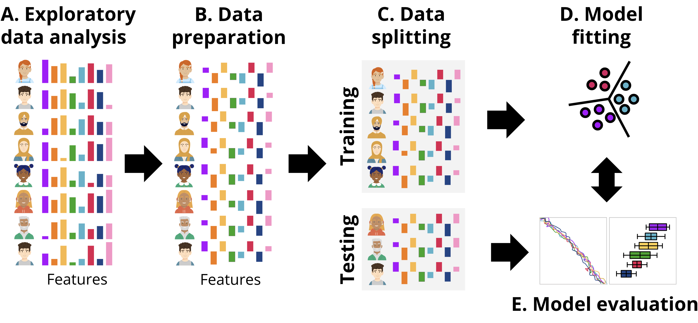
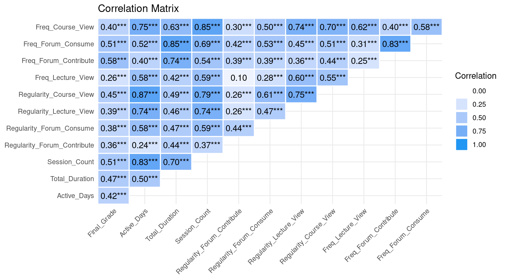
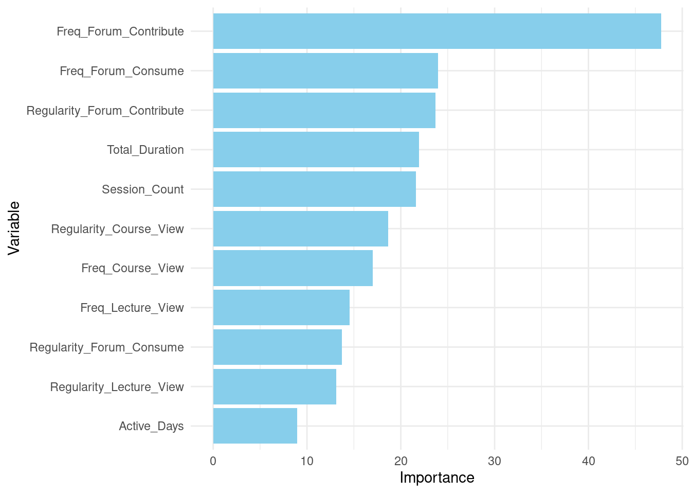
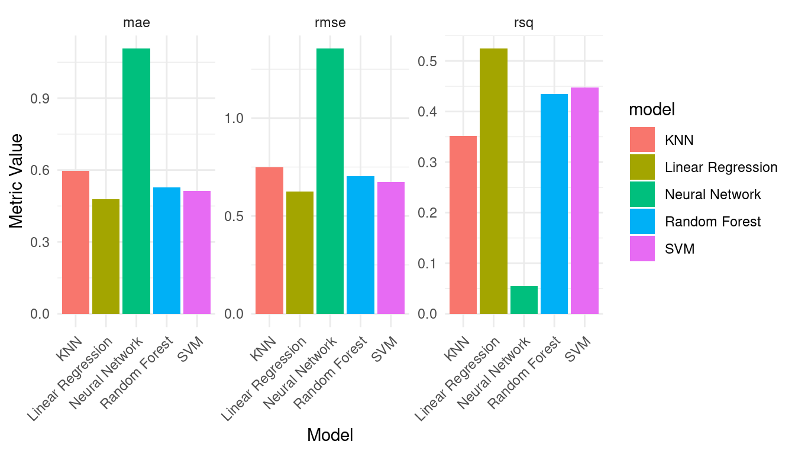

# Load required libraries
library(tidyverse)
library(correlation)
library(skimr)
library(rio)
library(performance)
student_data <- import("https://github.com/lamethods/data2/raw/main/lms/lms.csv")3 Artificial Intelligence: Using Machine Learning to Predict Students’ Performance
Abstract
Being able to predict students’ performance has been a primary driver for the adoption of learning analytics and has attracted many scientists to the field. Predictive modeling focuses on using students’ data to forecast outcomes such as student grades, enabling teachers and administrators to offer just-in-time support to students at risk. This chapter uses advanced predictive methods, namely machine learning, where the goal is to predict continuous variables like grades. The chapter uses advanced and popular AI/machine learning algorithms like Random Forest, K-Nearest Neighbor, Linear Regression, Neural Networks, and Support Vector Machines. The chapter provides a practical guide to building and evaluating predictive models with R using two approaches: one is the classic approach for predictive modeling with R, and the other more modern approach using the tidymodels suite.
1 Introduction
Predicting student performance is one of the most common tasks in learning analytics [1]. Typically, student grades are used as an outcome variable of such modeling. Predicting a continuous variable like grades is called a regression problem, in contrast with classification that deals with nominal outcomes such as high and low achievers [2]. When we do predictive modeling, we assume that historical data can be used to build a model to predict the future using new data. In doing so, prediction goes beyond reporting what has happened but attempts to explain why an event happened, monitor what is currently happening and also attempts to foresee future developments [3]. As such, it provides a basis for actionable insights based on data or what we call data-informed decision making. This is particularly relevant for scaling up learning analytics applications. As such prediction has become a core step within the learning analytics process that aims to improve teaching or learning [4].
There are six main steps in predictive analytics [5]. First, the problem needs to be specified (e.g., improving student performance). Second, an outcome variable is defined (e.g., student grades), and data that can potentially predict the outcome variable is collected. Several types of data can be collected: prior academic data (e.g., student admission information), demographic data (e.g., student’s socio-economic status), academic data (e.g., results of formative assessment), behavioral data (e.g., student log data), and psychological data (e.g., a survey on student motivation) [6]. Third, raw data needs to be pre-processed to become suitable for modeling. This can include formatting the data or deriving features from raw data (e.g., calculating time spent in an online system by subtracting log-out time from log-in time) (see [7] for more details on data cleaning and wrangling). In order to choose the appropriate predictors for the predictive model, an exploratory analysis is conducted (see [8] for a tutorial in exploratory methods). Once the relevant indicators are selected, a predictive model can be built using one or more algorithms. The selection of an appropriate algorithm is determined by “the problem type, the nature of the outcome to be predicted, and the variables employed in the prediction” [6]. Typically, several algorithms would be compared to choose the method that models the data most accurately. The results from a predictive analysis can be used to develop preventive measures and interventions. Depending on the timing of the analysis, these interventions can be implemented on the current cohort of students, or the insights from the analytics can be used to shape future teaching and learning. Finally, it is important to build explainable prediction models —i.e., that provide an explanation for how a prediction was calculated— in order to increase the trust of the stakeholders in the model and increase awareness of what the model is actually predicting. In addition, explainable models can help validate model accuracy [9]. An example of an explainable predictive model is [10], who used data from formative assessment activities (e.g., the number of correct or incorrect answers to a question) to generate two predictions: of a grade in the midterm exam (on a scale of 0–20) and of a final grade (on a scale 0–40). The predictive model used the decision tree (DT) algorithm that supports the instructor’s sense-making and helps identify student groups in need of additional support.
The goal of this chapter is to explore advanced techniques of predictive analytics to model regression problems (see [11] for an introductory tutorial in predictive analytics). It is assumed that the reader is familiar with the R programming language. If that is not the case, it is recommended to refer to previous tutorials on the basics of R [12], data cleaning [13], basic statistics [14], and visualization [15]. The following section presents an overview of learning analytics research concerned with regression. Next, a synthetic dataset used in this tutorial is presented based on data of this study [16]. The tutorial section starts with an exploratory data analysis, including visualizing variable distribution and calculating correlations. It is followed by a description of the steps needed to create a predictive model. This tutorial explores the following predictive methods: Random Forest (RF), K-Nearest Neighbor (KNN), Linear Regression (LR), Neural Networks (NN), and Support Vector Machine (SVM). In addition, techniques to determine predictive model performance, such as Mean Absolute Error (MAE), Root-mean-square deviation (RMSE), and R-squared (RSQ), are presented and explained. The final part of this chapter shows how to create workflows to use multiple predictive algorithms.
2 Previous research on student performance prediction
[17] described three categories of regression techniques: 1) similarity-based approaches that are built upon identifying similar patterns in a dataset (e.g., KNN), 2) model-based approaches are developed by estimating implicit correlation among data samples and predictors (e.g., SVM, NN, DT, LR), 3) probabilistic approaches focus on examining probability distributions in the input dataset (e.g., Bayesian LR). Regression is the most commonly applied method in predictive analysis, while predicting student performance is one of the main regression problems prevalent in learning analytics research [18]. The vast majority of learning analytics papers focus on predicting student final grades [18]. Predictions in learning analytics are conducted in two main ways: 1) formative prediction examines student features at several points in the duration of the learning activity to provide several predictions over time, and 2) summative prediction aggregates data from the whole learning activity to predict the final outcome [19–21]. In addition, different levels of learning activity can be specified, e.g., degree, year, course, or exam level [22]. Log activity data is typically combined with other data sources, such as demographic or self-reported data [18]. Current evidence suggests that engagement level expressed through participation frequencies has a positive effect on performance [18]. Prior academic data, such as grades achieved in previous courses, was found to be the most influential factor in predicting student performance. An interesting meta-analytics study conducted by [16] to examine the reliability of predictors across courses found that overall engagement with online tasks and collaborative learning activities (measured by total activity and forum indicators) showed the highest prediction ranges, indicating their reliability as metrics. Lecture reading frequency had insignificant prediction ranges, suggesting limited applicability across courses.
Predictive modeling can be challenging sometimes, specially when using low quality data for analysis or having a shallow understanding of the nature of the data and therefore can lead to untrustworthy findings. As learning processes are dynamic, using results from historical data to model current learners can be inaccurate and lead to the over-fitting or under-fitting of statistical models [23]. These issues can be mitigated by applying methods such as cross-validation or bootstrapping [4, 23, 24]. Another problem in predictive analytics is imbalanced datasets, where specific important values are not sufficiently represented in a dataset. This issue can be mitigated by over- or undersampling (for more details, see [25]). In addition, it is crucial to approach the findings from a point-in-time perspective that takes into consideration the temporality aspect of the findings’ accuracy [24, 26]. Also, it is important to consider the ethical implications of implementing predictive learning analytics so as not to cause harm to students or contribute to perpetuating social injustices [27, 28]. [17] identified three main issues with implementing predictive learning analytics. First, the issue of a cold start relates to the lack of data at the early stages of learning analytics deployment. This challenge can be mitigated by including demographic data or previous academic data. Second, the issue of scalability is connected to the increasing number of students, the complexity of algorithms used, and the computational requirements necessary to perform analytics. To address this issue, time constraints on the analysis or algorithm optimization need to be performed. Third, the issue of data sparsity refers to the lack of sufficient data about student activities, which can be caused by offline learning activities or passive interactions with available online learning systems. In order to increase available data, online learning activities can be made mandatory and embedded into a course design.
Decisions regarding which data to collect, which features to select, which algorithm to use to build a predictive model, or how to evaluate model performance depend on the available data, dataset size, and study context [16]. A substantial body of research compares the performance of different predictive algorithms. For example, [29] collected student demographic and socio-economic data, self-reported motivation level, and assessment data from two evaluations during a semester. The authors predicted the student’s final grade (on a scale of 0–20) using the KNN and SVM algorithms. The performance of both algorithms was evaluated using 10-fold cross-validation and direct partition in the ratio methods, and it was found that SVM outperformed KNN. In another example, [30] collected student log data from a learning management system, such as the number of system logins the number of posts, or quiz grades, to model final exam grades using SVM and LR algorithms. The predictions were made multiple times during a semester and shown to the teacher. In this study, LR performed better than SVM, and the goodness-of-fit measure, R-squared, increased with each prediction in the semester. In addition, feature selection decreased model performance. [17] predicted student scores on the final exam (on a scale of 0–110) using KNN, SVM, Artificial NN, DT, Bayesian Regression, and LR. The dataset includes demographic data (e.g., gender, age), engagement data (sum of clicks), and performance data (e.g., scores per assessment). Artificial NN using engagement data and performance data had the highest precision out of all models. Including demographic data did not improve model precision significantly.
Other papers focused on determining the most important features that predict the outcome variable. For example, [31] collected LMS activity data, such as login frequency or number of student posts, and student assignment and assessment grades to predict student final grades using multiple linear regression. The results showed that total login frequency in LMS, regularity of learning interval in LMS, and total assignments and assessment composites predicted the final grades. [32] collected two datasets: 1) where historical academic grades were available and limited demographic data was used; 2) where historical academic grades were not available, while demographic and socioeconomic data were extensively used. The SVM algorithm was applied to predict students’ high school final grades using both datasets. The authors reported greater errors in the case of the dataset without historical academic grades than in the dataset with historical academic grades.
Finally, the issue of transferring predictive models within the same learning context and across different learning contexts was explored in the learning analytics research [16, 33, 34]. For example, [35] examined the relationship between LMS log data and final grade (on a scale of 0–100%) after adjusting to student characteristics. In addition, separate multiple linear regression models were developed to compare different courses. The study found that the impact of LMS features varied significantly on student performance across courses. The work by [33] applied mixed effect linear regression models to analyze a sample of data from log data from 15 courses that were homogeneous regarding the institutional settings, discipline, nominal learning design, and course size. The results highlighted that the same pedagogical model and study setting did not guarantee the same predictive power among courses, as there may be differences in the practical implementation of specific pedagogical models. In addition, it was found that the overall time spent in an LMS, regular discussion forum posts, and accessing course materials regularly were significant predictors of student final course grades across all courses.
3 Performance prediction with R
In this section we present two approaches to implement performance prediction in R: one following a more classic procedure, and the second one following a more updated procedure based on tidymodels. Broadly, the workflow followed is depicted in Figure 11.4, aligned with the common steps that are performed in any ML pipeline. First, we explore the data to gain an idea of the magnitude, format and content of the data, explore the relationships between the different variables, etc. This step is called exploratory data analysis. Next, we prepare the data (B) for subsequent steps. This might include removing or fixing incomplete records, converting data to different types, unifying values that are close to one another, or rescaling the data. The transformations that we need to do are commonly dictated by the type of data and the ML models that we will be using in subsequent steps. After data preparation, the next step is data splitting (C). Here, the dataset is divided into training and testing sets. The training set is used to fit the model, while the testing set is reserved for evaluating its performance. It is crucial to ensure that the testing set remains untouched until the evaluation stage to provide an unbiased estimate of the model’s generalization ability. Once the data is split, the process moves to model fitting (D). During this stage, the training data is used to train the selected machine learning models. This involves finding the optimal parameters that minimize error or maximize predictive accuracy for the given task. Depending on the algorithm, the model may identify different patterns, such as decision boundaries or relationships between features and the target variable. Finally, in the model evaluation step (E), the trained model is tested on the unseen testing data. Performance metrics that quantify the degree of error in the numeric predictions are computed to determine how well the model performs on new data. This step ensures that the model is not overfitting the training data and can generalize well to other datasets. We can repeat this process for several models with different underlying ML algorithms, or using only a subset of features of the data and compare the performance metrics among different models to select the one with the best fit.

3.1 The dataset used in this chapter
The dataset we are using to illustrate the methods in this tutorial is a synthetic dataset based on the study by Jovanović et al. [33] and consists mostly of behavioral engagement indicators that can be obtained from learning management system (LMS) trace-log data. These variables capture both the engagement behavior of students (e.g., frequency and regularity of course and forum activities) and their participatory and time investment in the course (e.g., total duration, active days, session count) as well as the regularity of participation. Both time and regularity may be considered proxy indicators of cognitive engagement. We can also consider forum contributions as indicators of cognitive engagement since the context is problem-based learning, and student contributions require students to read, synthesize, critique, and formulate arguments [36].
The dataset has the following variables:
- Frequency Variables
- Freq_Course_View: The frequency of course page views by the student.
- Freq_Forum_Consume: The frequency with which the student consumes content in the forum (i.e., reads forum posts).
- Freq_Forum_Contribute: The frequency with which the student contributes to the forum (i.e., posts in the forum).
- Freq_Lecture_View: The frequency of lecture video views by the student.
- Regularity Variables
- Regularity_Course_View: The consistency of the student’s course page views.
- Regularity_Lecture_View: The consistency of the student’s lecture video views.
- Regularity_Forum_Consume: The consistency of the student’s forum content consumption.
- Regularity_Forum_Contribute: The consistency of the student’s forum contributions.
- Time Variables
- Session_Count: The total number of sessions the student has participated in.
- Total_Duration: The total duration (in seconds) of all sessions participated by the student.
- Active_Days: The number of days the student was active in the course.
- Outcome Variables
- Final_Grade: The final grade of the student in the course.
3.1.1 Exploratory Data Analysis
Exploratory data analysis (EDA) is usually performed before doing the actual machine learning tasks (Figure 11.4–A). EDA includes examining the characteristics of the dataset to understand the distribution of the variables, and identify patterns and inconsistencies, if they may arise. Exploring the distribution and variance of each variable helps us identify any skewness, outliers, or anomalies in the data. Furthermore, EDA also allows us to examine the presence of missing values —or lack thereof—, handle distribution inconsistencies, and transform variables to balance their characteristics if needed. For instance, if we find that our variables have different measurement scales (one is measured in large numbers with vast variance and another in proportions and ranges between 0 and 1), we may need to transform or normalize the data to ensure that the two variables are not largely different. This process is particularly needed in some algorithms that are sensitive to discrepancies between variables. Additionally, we may have variables that are highly correlated (e.g., each is more or less a copy of the other), we may need to discard one of these similar variables as they do not offer any added information to the model and may bias the estimates. It should be mentioned that standardization will often result in less (direct) interpretability of the model, for example, when predicting final grade, there will be negative grades (below average) which might be hard to interpret, and also regression coefficients may be tricky to interpret. If standardization is carried out, the results may be presented on the original scales for better interpretation.
The first step in EDA is to load the R packages and use them to explore the data. We will need several R packages. Firstly, we will need tidyverse: a set of R packages designed to make it easy to read, edit, manipulate and visualize data through a large collection of functions for filtering, selecting and modifying the data [37]. As a collection of packages, tidyverse includes packages such as dplyr and tidyr for data manipulation and ggplot2 for data visualization, among others. The skimr package provides an easy, yet comprehensive, summary of a dataset with more detail than most R built-in summary functions [38]. The skimr package offers central tendency statistics like mean and median as well as the number and proportion of missing values for each variable, making it easy to get an overview of the data and detect any anomalies or patterns quickly. Besides, skimr calculates variance measures, maximum, minimum and displays a miniature histogram for each variable. The correlation package is an easy-to-use package for estimating and visualizing several types of correlations. We will need the package correlation to visualize the correlation between variables. In particular, it will be used to create a heatmap to understand relationships between variables [39]. We will also use the package rio to import the data into our code [40]. Lastly, we will use the performance package to evaluate our predictive models [41].
The next code starts by loading the R packages and reading the data.
The previous R code imports student data from a CSV file. Next, the following EDA tasks will be performed: 1) provide a detailed summary of the data using skimr, 2) create histograms for all variables to examine their distribution, 3) calculate and visualize correlations between variables, and 4) extract and display correlations with the final grade of the course (Final_Grade).
In our EDA, first, we get a quick and comprehensive overview of the dataset using the skim function from the skimr package. The function provides detailed information such as the number of rows, number of columns, type of variables, and most importantly, the number of missing values (n_missing). skimr also provides basic statistics for each variable like mean, standard deviation (sd), minimum (p0) and maximum (p100), first quartile (p25), median (p50), third quartile (p75), and a small histogram of the data.
# 1. A detailed summary using skimr
skim(student_data)| Name | student_data |
| Number of rows | 285 |
| Number of columns | 12 |
| _______________________ | |
| Column type frequency: | |
| numeric | 12 |
| ________________________ | |
| Group variables | None |
Variable type: numeric
| skim_variable | n_missing | complete_rate | mean | sd | p0 | p25 | p50 | p75 | p100 | hist |
|---|---|---|---|---|---|---|---|---|---|---|
| Freq_Course_View | 0 | 1 | 223.79 | 59.33 | 51.00 | 187.00 | 222.00 | 264.00 | 356.00 | ▁▃▇▇▂ |
| Freq_Forum_Consume | 0 | 1 | 582.55 | 175.55 | 84.00 | 465.00 | 589.00 | 703.00 | 991.00 | ▁▅▇▇▂ |
| Freq_Forum_Contribute | 0 | 1 | 178.07 | 55.57 | 17.00 | 144.00 | 175.00 | 213.00 | 347.00 | ▁▅▇▃▁ |
| Freq_Lecture_View | 0 | 1 | 201.87 | 56.68 | 32.00 | 162.00 | 202.00 | 247.00 | 346.00 | ▁▃▇▆▁ |
| Regularity_Course_View | 0 | 1 | 0.51 | 0.14 | 0.15 | 0.42 | 0.52 | 0.61 | 0.90 | ▂▅▇▅▁ |
| Regularity_Lecture_View | 0 | 1 | 0.48 | 0.15 | 0.07 | 0.38 | 0.49 | 0.57 | 0.80 | ▁▅▇▇▃ |
| Regularity_Forum_Consume | 0 | 1 | 0.49 | 0.14 | 0.13 | 0.41 | 0.50 | 0.58 | 0.95 | ▁▅▇▂▁ |
| Regularity_Forum_Contribute | 0 | 1 | 0.48 | 0.16 | 0.03 | 0.38 | 0.47 | 0.59 | 0.90 | ▁▃▇▅▂ |
| Session_Count | 0 | 1 | 189.54 | 52.83 | 53.00 | 151.00 | 191.00 | 229.00 | 306.00 | ▂▅▇▇▂ |
| Total_Duration | 0 | 1 | 83150.98 | 23818.16 | 25055.00 | 68632.00 | 83667.00 | 98373.00 | 147827.00 | ▂▆▇▅▁ |
| Active_Days | 0 | 1 | 16.06 | 4.15 | 5.00 | 14.00 | 16.00 | 19.00 | 31.00 | ▂▆▇▂▁ |
| Final_Grade | 0 | 1 | 68.62 | 8.86 | 44.73 | 62.42 | 68.66 | 75.26 | 90.89 | ▁▆▇▇▁ |
The results of the skim(student_data) command show that the data has 285 observations and no missing data in any variable. However, the variables have large differences in variance. For instance, the frequency variables are different from the regularity variables which are all below 1 and even more different if we compared them to the duration which has a mean of 83150.98 (SD = 23818.16). This information tells us that data may need to be normalized if the algorithm that we choose is sensitive to differences in variance.
The second step is to inspect the distribution of all variables (Figure 3.2) using the following code, which starts by using pivot_longer(everything()) to reshape our data, putting all variables into a single column. This makes it easier to create a faceted plot (multiple plots). We use ggplot2 to create histograms for each variable. The facet_wrap(~ name, scales = "free") line creates a separate plot for each variable, and scales = "free" allows each plot to have its own horizontal and vertical scales, which is often necessary when dealing with variables of different types or ranges and scales of measurement. For a tutorial about data visualization with R, refer to [15].
# 2. Histograms of all variables
student_data |>
pivot_longer(everything()) |>
ggplot(aes(x = value)) +
geom_histogram(bins = 25, fill = "skyblue", color = "black") +
facet_wrap(~ name, scales = "free") +
theme_minimal()
The third step is to look at the correlations between variables (Figure 3.3). This allows us to see if there are any variables that are highly correlated to each other. If there are variables that are perfectly or almost perfectly correlated, they might be redundant or linear combinations of one another and therefore, do not add much to the model. The heatmap shows that most variables have correlations below the 0.8 level, and only a few cross this level. We may also examine the correlation with the final grade (our outcome variable that we want to predict) to explore variable importance.
# 3. Relationship between Variables and `Final_Grade`
# Calculate correlations with `Final_Grade`
correlations <- correlation(student_data, method = "pearson")
correlations |> summary() |> plot() +
theme_minimal() +
theme(axis.text.x = element_text(angle = 45, vjust = 1, hjust = 1))
Final_Grade# Extract and display correlations with `Final_Grade`
final_grade_correlations <- correlations |>
as.data.frame() |>
filter(Parameter2 == "Final_Grade") |>
arrange(desc(r))
# Print the correlations with `Final_Grade`
final_grade_correlations3.1.2 Data preparation
The next stage in our workflow is data preparation (Figure 11.4–B), where we clean and transform our data to fix any problems and inconsistencies and to get it ready for subsequent steps. We can see two potential issues with our data: data with large differences in variance (e.g., duration and regularity) as well as potential high collinearity in some variables. We may need to standardize the data (subtract the mean and divide by the standard deviation) to make all variables have a comparable scale. The code in the next chunk does exactly that: it simply scales all numeric variables. You may need to re-run the EDA code again to verify:
# Standardize numeric columns in the student_data data frame
student_data_standardized <- student_data |>
mutate(across(
where(is.numeric), # Select all numeric columns
~scale(.) |> # Standardize each column (M=0, SD=1)
as.vector() # Convert to vector
))
# Use skimr package to get a summary of the standardized data
skim(student_data_standardized) | Name | student_data_standardized |
| Number of rows | 285 |
| Number of columns | 12 |
| _______________________ | |
| Column type frequency: | |
| numeric | 12 |
| ________________________ | |
| Group variables | None |
Variable type: numeric
| skim_variable | n_missing | complete_rate | mean | sd | p0 | p25 | p50 | p75 | p100 | hist |
|---|---|---|---|---|---|---|---|---|---|---|
| Freq_Course_View | 0 | 1 | 0 | 1 | -2.9 | -0.62 | -0.03 | 0.68 | 2.2 | ▁▃▇▆▂ |
| Freq_Forum_Consume | 0 | 1 | 0 | 1 | -2.8 | -0.67 | 0.04 | 0.69 | 2.3 | ▁▅▇▇▂ |
| Freq_Forum_Contribute | 0 | 1 | 0 | 1 | -2.9 | -0.61 | -0.06 | 0.63 | 3.0 | ▁▅▇▃▁ |
| Freq_Lecture_View | 0 | 1 | 0 | 1 | -3.0 | -0.70 | 0.00 | 0.80 | 2.5 | ▁▃▇▆▁ |
| Regularity_Course_View | 0 | 1 | 0 | 1 | -2.5 | -0.62 | 0.09 | 0.73 | 2.8 | ▂▅▇▅▁ |
| Regularity_Lecture_View | 0 | 1 | 0 | 1 | -2.8 | -0.66 | 0.09 | 0.63 | 2.2 | ▁▅▇▇▃ |
| Regularity_Forum_Consume | 0 | 1 | 0 | 1 | -2.6 | -0.60 | 0.05 | 0.62 | 3.3 | ▁▅▇▂▁ |
| Regularity_Forum_Contribute | 0 | 1 | 0 | 1 | -2.8 | -0.64 | -0.08 | 0.66 | 2.6 | ▁▃▇▅▂ |
| Session_Count | 0 | 1 | 0 | 1 | -2.6 | -0.73 | 0.03 | 0.75 | 2.2 | ▂▅▇▇▂ |
| Total_Duration | 0 | 1 | 0 | 1 | -2.4 | -0.61 | 0.02 | 0.64 | 2.7 | ▂▆▇▅▁ |
| Active_Days | 0 | 1 | 0 | 1 | -2.7 | -0.50 | -0.02 | 0.71 | 3.6 | ▂▆▇▂▁ |
| Final_Grade | 0 | 1 | 0 | 1 | -2.7 | -0.70 | 0.00 | 0.75 | 2.5 | ▁▆▇▇▁ |
We may also need to investigate the multicollinearity issue further. While multicollinearity is not a commonly discussed problem in machine learning, it is particularly important in explainable AI. If present, multicollinearity can lead to unstable estimates of model coefficients and inflated standard errors. One way to detect multicollinearity is by calculating the variance inflation factor (VIF). VIF measures the amount of inflation in the variance of a coefficient due to its correlation with other predictors. A high VIF value indicates that a variable is highly correlated with one or more other variables, suggesting multicollinearity. While there is no consensus about the VIF cutoff, in practice, a VIF value greater than 5 or 10 is often used as a cutoff to indicate multicollinearity. VIF is commonly computed in regression models, so we fit a regression model in the following code and then estimate the VIF from it. The code fits a linear regression model to predict the outcome variable (Final_Grade) using student LMS indicators as predictors. After fitting the model, it pipes the result into the check_collinearity() function from the performance package. The results of the VIF show that we have only four variables with moderate VIF values, so we can proceed with the analysis with no exclusion of any variable, given that we do not have a considerable collinearity problem.
# Fit a linear regression model and check for multicollinearity
lm(Final_Grade ~ Freq_Course_View + Freq_Lecture_View + Freq_Forum_Consume +
Freq_Forum_Contribute + Regularity_Course_View +
Regularity_Lecture_View + Regularity_Forum_Consume +
Regularity_Forum_Contribute + Session_Count +
Total_Duration + Active_Days,
data = student_data_standardized) |> # Use standardized data for the model
check_collinearity() # Check for multicollinearity among predictors4 Tutorial 1: A Classic Approach to Predictive Modeling
Having explored and prepared the data, we now proceed to the next step of predicting students’ performance using machine learning. We will predict the final grades using the variables that represent the students’ engagement. The steps include loading the necessary R packages, splitting the data, fitting the model, and evaluating the model’s performance. First, we load the required R packages: the randomForest package, which is used to build the random forest model, the rsample package, which will be used to split the data into training and testing sets, and the yardstick package to facilitate model evaluation by calculating performance metrics.
Second, we split the dataset into two parts: a training set, which is used to train the machine learning model (perform the prediction), and a testing set (a holdout set for evaluation). The main rationale for data splitting is to use it to assess the performance of the estimated machine learning model on new, unseen data (the testing dataset). When keeping a testing dataset aside, we can evaluate how well the trained model generalizes to new data instances and estimate its accuracy. After all, we are creating the model with the hope that the same results will be obtainable in the future with new data. Furthermore, if we perform the prediction on all of the data, the model may —and most probably will— overfit. Overfitting occurs when a model learns the training data too well, including noise or irrelevant features, resulting in poor performance on new data. By having a separate testing set held out, we are increasing the likelihood that the model is learning the relevant patterns within the data not the noise. In practice, if a good model performs well on both the training and testing datasets, it is a good indication that the model is not overfitting and is likely to perform well in other situations with new data. Lastly, having a separate testing data set is rather valuable when our goal is to compare multiple machine learning algorithms to determine which model performs better on new data.
The code below uses the function initial_split function from the rsample package to perform an 80/20 split, where 80% of the data is used to train the model (perform the prediction), and the remaining 20% is kept aside as a testing set. While there is no consensus on the split ratio with many others using 70/30 and closer values, 80/20 is a reasonable starting point as it provides sufficient data for training while reserving a reasonable amount for evaluation.
Third, we build the random forest model using the randomForest function from the randomForest package. The random forest algorithm is an ensemble learning method that creates multiple decision trees and combines their predictions to improve accuracy and control overfitting. This combination of multiple models helps reduce overfitting by averaging out the errors, resulting in an —arguably— more robust and generalizable model. More importantly, the random forest algorithm is an explainable model and provides feature importance scores, which can be used to identify the most relevant features for the problem at hand. In our case, it can help explain which variables help predict students’ performance. In this model, we predict the final grade (Final_Grade) based on the engagement variables such as the frequency and regularity of course views, lecture views, forum consumption and contributions, session count, total duration of activities, and the number of active days. We specify the number of trees (ntree) to be 1000, a parameter that controls the complexity and performance of the model.
After fitting the model, we print the model summary using the functions print and importance (which shows the explanatory variables). The summary provides the model call, insights into the model’s performance, including error rates and the proportion of variance explained. Variable importance shows how much each predictor has contributed to the prediction accuracy of students’ performance. In doing so, it allows us to understand which features are more associated with higher grades. More accurately, which features the random forest algorithm associated with higher grades. Learning the important variables allows us to gain insights of what can help in improving teaching and learning based on the results of our model.
Fourth, we use the trained model with new unseen data instances that we held out (the testing dataset) to perform predictions. In other words, the already trained model will estimate the final grades in the testing data. In this step, we use the predict function to apply the model to the test dataset to generate predictions of final grades. These predictions will be compared against the actual grades to evaluate how close or far the algorithm was able to predict the grades and by that we evaluate the model’s performance. The closer the predictions are to the actual grade values, the better the performance of the algorithm. If the predicted grades differ considerably from the actual grades, it is an indication that the model is not good enough. It might be that we do not have enough data to make reliable predictions or, on the contrary, that our model is overfitted to the training data.
In the fifth step, we evaluate the model performance, given that there are multiple ways to assess performance, we will use different indicators, each of them provides different insights. Among the most common metrics when evaluating a regression machine learning model are the root mean squared error (RMSE), R-squared (R²), and mean absolute error (MAE). RMSE is a measure of the differences between predicted and actual values. It is calculated as the square root of the average of the squared differences between predicted and actual values. RMSE is always a positive value (because the errors are squared), where lower RMSE values indicate a better fit of the model to the data. Further, RMSE is sensitive to outliers because RMSE squares the errors, inflating the weight of larger errors.
R-squared (R² or rsq) measures the proportion of variance in the dependent variable (the final grade in our case) that is explained by the independent variables. R² values range from 0 to 1, where values of 1 indicate that the model explains all the variability and R² of 0 indicates that the model explains none (bad model). However, although R² is popular, it can be misleading, pointing to erroneous conclusions. A high R² does not necessarily mean that the model is good; it only means that the model explains a large portion of the variance in the dependent variable. A major issue is that R² only measures the goodness of fit between the model and the data, but it does not account for the complexity or interpretability of the model. Adding more independent variables to a model, regardless of their relevance, will always increase or at least not decrease the R² value, leading to a more complex model that may be hard to interpret. As such, high R² values may give a false impression of a model’s predictive power. Furthermore, a high R² does not guarantee that the model will perform well on new, unseen data. Other metrics such as RMSE or MAE, are more useful in this regard. MAE measures the absolute average magnitude of the errors in a set of predictions (i.e., without considering the direction of the difference). It is calculated as the average of the absolute differences between predicted and actual values. Unlike RMSE, MAE is not sensitive to outliers (since no squaring is performed).
The sixth step in our analysis is creating better and enhanced model performance evaluation. In that, we visualize the predicted versus actual grades to see how the model fared. We also plot the variable importance in a better way using the ggplot2 package as well as the residuals. Here are the steps of the tutorial in detail:
4.1 Loading the necessary libraries
The code below starts by loading the necessary libraries. The randomForest [42] library is used to build and work with random forest models, while rsample [43] aids in splitting the dataset into training and testing subsets. The yardstick [44] package is used for evaluating the performance of the model, and ggplot2 is employed for creating visualizations, although the latter is not explicitly mentioned in the code given that it is part of tidyverse [37] that we loaded before. Next, we set the seed function to a number set.seed(256) to ensure that our results would repeat in a similar way when re-running the code, e.g., data splitting would be consistent across different runs of the code.
# Step 1: Load necessary libraries
library(randomForest) # For building the Random Forest model
library(rsample) # For data splitting
library(yardstick) # For model evaluation
# Set seed for reproducibility
set.seed(256)4.2 Splitting the dataset
Then, in the second step, we split the dataset (student_data_standardized) into training and testing sets (Figure 11.4–C). This is done using the initial_split function from the rsample package, which divides the data into an 80% training set and a 20% testing set. The training function extracts the training subset, while the testing function retrieves the testing subset and they are both assigned to two data frames train_data and test_data respectively.
# Step 2: Split the data into training and testing sets
# Using initial_split from rsample package for an 80/20 split
data_split <- initial_split(student_data_standardized, prop = 0.8)
train_data <- training(data_split)
test_data <- testing(data_split)4.3 Creating and fitting the model
In the third step, we build and fit the random forest model (Figure 11.4–D). The randomForest function is used to create this model, where Final_Grade is predicted based on the engagement predictor variables such as Freq_Course_View, Freq_Lecture_View, and Session_Count. The model is configured to use 1000 trees, which is specified by the ntree parameter. In Random Forest models, specifying a large number of trees enhances performance by reducing variance and improving stability through the aggregation of predictions from 1000 diverse trees. Each tree provides a unique perspective due to its training on random data subsets, and averaging their predictions minimizes overfitting. Yet, whereas more trees may improve model performance, balancing the number of trees is important, as performance gains diminish —or disappear— beyond a certain point. Also, setting a very high number of trees incurs computational costs, increases the risk of overfitting, and training time.
After fitting the model, the code prints a summary of the random forest model using print(rf_model). This summary provides insights into the model’s performance and structure. Additionally, importance(rf_model) is called to extract and display the importance of each variable in the model, helping to identify which predictors contribute most to the model’s predictions.
# Step 3: Create and fit a Random Forest model
# Building the Random Forest model with 1000 trees
rf_model <- randomForest(Final_Grade ~
Freq_Course_View + Freq_Lecture_View + Freq_Forum_Consume +
Freq_Forum_Contribute + Regularity_Course_View +
Regularity_Lecture_View + Regularity_Forum_Consume +
Regularity_Forum_Contribute + Session_Count +
Total_Duration + Active_Days,
data = train_data, ntree = 1000)
# Print model summary and variable importance
print(rf_model)
Call:
randomForest(formula = Final_Grade ~ Freq_Course_View + Freq_Lecture_View + Freq_Forum_Consume + Freq_Forum_Contribute + Regularity_Course_View + Regularity_Lecture_View + Regularity_Forum_Consume + Regularity_Forum_Contribute + Session_Count + Total_Duration + Active_Days, data = train_data, ntree = 1000)
Type of random forest: regression
Number of trees: 1000
No. of variables tried at each split: 3
Mean of squared residuals: 0.7
% Var explained: 33# Printing the model summary and variable importance
importance(rf_model) IncNodePurity
Freq_Course_View 17.0
Freq_Lecture_View 14.5
Freq_Forum_Consume 24.0
Freq_Forum_Contribute 47.7
Regularity_Course_View 18.7
Regularity_Lecture_View 13.1
Regularity_Forum_Consume 13.7
Regularity_Forum_Contribute 23.7
Session_Count 21.6
Total_Duration 22.0
Active_Days 8.94.4 Evaluating the model’s performance
The next stage in our workflow is to evaluate how well our model predicts performance (Figure 11.4–E). In Step 4, we make predictions on the test data using our trained Random Forest model by using the predict function, which generates a set of predicted values based on the features in test_data and the algorithm estimated before.
# Step 4: Make predictions on the test data
# Making predictions based on the test data using the trained model
predictions <- predict(rf_model, newdata = test_data)In Step 5, we add these predictions to the test dataset, creating a new data frame called evaluation_data that includes both the actual and predicted grades. We then use the metrics function from the yardstick package to evaluate our model’s performance by comparing the predicted grades with the actual ones, and we print the performance results to obtain performance metrics RMSE, MAE, and R-squared.
# Step 5: Evaluate the model's performance
# Adding predictions to the test data for evaluation
evaluation_data <- bind_cols(test_data, Predicted_Grade = predictions)
# Evaluating model performance
performance_metrics <- evaluation_data |>
metrics(truth = Final_Grade, estimate = Predicted_Grade)
# Print the model performance metrics
print(performance_metrics)# A tibble: 3 × 3
.metric .estimator .estimate
<chr> <chr> <dbl>
1 rmse standard 0.631
2 rsq standard 0.525
3 mae standard 0.480In step 6, we produce two visualizations. The first visualization plots the actual versus predicted grades (Figure 3.4). Examining the distance between the residual and the fitted line gives an idea about how the model fared. The other plot is an improved plot of the important variables (Figure 4.4).
# Step 6: Visualize predicted vs actual grades
ggplot(evaluation_data, aes(x = Final_Grade, y = Predicted_Grade)) +
geom_point(color = "blue", alpha = 0.5) +
geom_abline(intercept = 0, slope = 1, color = "red", linetype = "dashed") +
labs(x = "Actual Grade", y = "Predicted Grade") +
theme_minimal()
# Enhanced variable importance plot
# Extracting variable importance from the Random Forest model
variable_importance <- importance(rf_model)
var_imp_df <- data.frame(Variable = rownames(variable_importance),
Importance = variable_importance[, 1])
# Plotting variable importance
ggplot(var_imp_df, aes(x = reorder(Variable, Importance), y = Importance)) +
geom_bar(stat = "identity", fill = "skyblue") +
coord_flip() +
labs(x = "Variable", y = "Importance") +
theme_minimal()
This code snippet demonstrates how to create and interpret residual plots for a random forest model. The process begins by calculating residuals, which are the differences between the actual Final_Grade and the Predicted_Grade. These residuals are then visualized in two separate plots using ggplot2. The first plot is a basic scatter plot of residuals against predicted grades, with each point representing a prediction (Figure 3.6). A horizontal red dashed line at zero helps identify any systematic over- or under-prediction. The second plot builds upon the first by adding a green smoothed trend line, which can reveal non-linear patterns in the residuals. Ideally, the residuals should be randomly scattered around the zero line with no discernible pattern, indicating that the model’s errors are randomly distributed and there are no underlying biases or issues with the model.
# Calculate residuals
evaluation_data$residuals <-
evaluation_data$Final_Grade - evaluation_data$Predicted_Grade
# Add a smoothed line to show trends
ggplot(evaluation_data, aes(x = Predicted_Grade, y = residuals)) +
geom_point(color = "blue", alpha = 0.5) +
geom_hline(yintercept = 0, color = "red", linetype = "dashed") +
geom_smooth(method = "loess", color = "green", se = FALSE) +
labs(x = "Predicted Grade", y = "Residuals") +
theme_minimal()
4.5 Other algorithms
In the same way, we can execute other algorithms. Here we use a simpler algorithm (linear regression) given that it assumes that the relation between predictors and predicted grades is linear. Also, linear regression model does not need tuning (e.g., number of trees etc.). The way variable importance is calculated also differs: Random forest provides an inherent measure of feature importance, whereas for linear regression, we use the absolute values of the coefficients for importance. The evaluation metrics and visualization steps remain largely the same, although the results and interpretations would likely differ due to the fundamental differences in the models. Not also that the linear regression had lower R² but higher error measures RMSE and MAE. Please also note the differences and similarities in variable importance between the two algorithms.
# Step 1: Create and fit a Linear Regression model
lm_model <- lm(Final_Grade ~
Freq_Course_View + Freq_Lecture_View + Freq_Forum_Consume +
Freq_Forum_Contribute + Regularity_Course_View +
Regularity_Lecture_View + Regularity_Forum_Consume +
Regularity_Forum_Contribute + Session_Count +
Total_Duration + Active_Days,
data = student_data_standardized)
# Print model summary
print(summary(lm_model))
Call:
lm(formula = Final_Grade ~ Freq_Course_View + Freq_Lecture_View +
Freq_Forum_Consume + Freq_Forum_Contribute + Regularity_Course_View +
Regularity_Lecture_View + Regularity_Forum_Consume + Regularity_Forum_Contribute +
Session_Count + Total_Duration + Active_Days, data = student_data_standardized)
Residuals:
Min 1Q Median 3Q Max
-2.5669 -0.4984 0.0593 0.5060 1.9453
Coefficients:
Estimate Std. Error t value Pr(>|t|)
(Intercept) 0.000000000000000747 0.046179132911298881 0.00 1.000
Freq_Course_View -0.004596244897394796 0.098861369352034281 -0.05 0.963
Freq_Lecture_View -0.019940653761920547 0.064689500916218223 -0.31 0.758
Freq_Forum_Consume -0.144808972991361057 0.118530889483868279 -1.22 0.223
Freq_Forum_Contribute 0.523780479201737648 0.089481942137727782 5.85 0.000000014 ***
Regularity_Course_View 0.073043787722892314 0.105214018434519427 0.69 0.488
Regularity_Lecture_View 0.031349755109250026 0.081356823049423099 0.39 0.700
Regularity_Forum_Consume 0.050298824195160151 0.066285623420039699 0.76 0.449
Regularity_Forum_Contribute 0.106781491699962761 0.055297248687460540 1.93 0.055 .
Session_Count 0.278012448531555212 0.125078957967640347 2.22 0.027 *
Total_Duration -0.077927196019897907 0.100821687015266614 -0.77 0.440
Active_Days -0.035067688196140728 0.111265764443180828 -0.32 0.753
---
Signif. codes: 0 '***' 0.001 '**' 0.01 '*' 0.05 '.' 0.1 ' ' 1
Residual standard error: 0.78 on 273 degrees of freedom
Multiple R-squared: 0.416, Adjusted R-squared: 0.392
F-statistic: 17.7 on 11 and 273 DF, p-value: <0.0000000000000002# Step 2: Make predictions on the data
predictions_lm <- predict(lm_model, newdata = student_data_standardized)
# Step 3: Evaluate the model's performance
# Adding predictions to the data for evaluation
evaluation_data_lm <- bind_cols(student_data_standardized,
Predicted_Grade_lm = predictions_lm)
# Evaluating model performance
performance_metrics_lm <- evaluation_data_lm |>
metrics(truth = Final_Grade, estimate = Predicted_Grade_lm)
# Print the model performance metrics
print(performance_metrics_lm)# A tibble: 3 × 3
.metric .estimator .estimate
<chr> <chr> <dbl>
1 rmse standard 0.763
2 rsq standard 0.416
3 mae standard 0.602# Step 4: Visualize predicted vs actual grades
ggplot(evaluation_data_lm, aes(x = Final_Grade, y = Predicted_Grade_lm)) +
geom_point(color = "blue", alpha = 0.5) +
geom_abline(intercept = 0, slope = 1, color = "red", linetype = "dashed") +
labs(x = "Actual Grade", y = "Predicted Grade") +
theme_minimal()
# Step 5: Variable importance plot
# Extracting variable importance from the Linear Regression model
variable_importance_lm <- abs(coef(lm_model)[-1]) # Exclude intercept
var_imp_df_lm <- data.frame(Variable = names(variable_importance_lm),
Importance = variable_importance_lm)
# Plotting variable importance
ggplot(var_imp_df_lm, aes(x = reorder(Variable, Importance), y = Importance)) +
geom_bar(stat = "identity", fill = "skyblue") +
coord_flip() +
labs(x = "Variable", y = "Absolute Coefficient Value") +
theme_minimal()

5 Tutorial 2: A Modern Approach to Predictive Modelling using tidymodels
Having used the traditional way, now we introduce a more modern approach of doing machine learning in R using tidymodels. The tidymodels framework provides a consistent interface for modeling in R by integrating several packages that work together seamlessly throughout the modeling process. The tidymodels package eliminates the need to learn and remember the various syntax and functions required by different modeling packages. Instead of having to switch between different paradigms and approaches for each package, you can use the same set of tools and functions. This uniformity speeds up model development and enhances code readability and maintainability.
Additionally, tidymodels offers integrated tools for tasks like pre-processing, resampling, and performance evaluation, further simplifying and accelerating the entire modeling workflow. For instance, the parsnip package in tidymodels allows us to define models in a consistent manner, regardless of the underlying algorithm (e.g., randomForest, ranger, xgboost). It provides functions like rand_forest() to specify the model, set_engine() to choose the computational backend, and set_mode() to define whether the model is used for regression or classification.
This organization is achieved through the use of workflows, which combines the entire modeling process in a single, manageable object, ensuring that each component is handled systematically. The tidy approach includes several steps: 1) splitting the data into training and testing sets (as done before), 2) defining a model specification (we will do a Random Forest model) using the standard approach of parsnip package, 3) creating a workflow combining the model specifications, 4) fitting the model to the training data, 5) making predictions on the test data, and 6) evaluating the model’s performance and visualizing the results. This tutorial will guide you through these steps, using parsnip to create a random forest model, evaluate its performance, and visualize the results. Below, we describe each step in detail:
Data Splitting: This step is done in the same way we did before.
Selecting the predictor and target variables: The formula specifies the relationship between the target variable and the predictor variables. In regression tasks, this formula includes the dependent variable (e.g.,
Final_Grade) and the independent variables — in our case, engagement indicators— such asFreq_Course_ViewandTotal_Duration. Defining the formula clearly outlines which variables are used to predict the outcome, ensuring that the model is correctly specified. We can also reuse the formula in other models without having to specify the arguments again.Model Specification with
parsnip: Usingparsnip, we define our random forest model with specific parameters. Therand_forest()function allows us to set the models parameters. The most important parameters are number of trees and number of variables to try in each split. In our model, we set number of trees (trees) to 1000 and the number of variables to sample at each split (mtry) to 3. Setting the engine to"randomForest"and the mode to"regression", we configure the model to perform regression tasks using the random forest algorithm.Creating the Workflow: A workflow is an object that combines together the model specification and the formula. This organized approach helps manage different components of the modeling process efficiently. Using the
workflow()function, we add the random forest model specification and formula to create a complete modeling pipeline.Fitting the Model: The model is fitted to the training data using the
fit()function.Making Predictions and Evaluating Performance: After fitting the model, we use it to make predictions on the test data as we did before. Similarly, for evaluation, these predictions are compared to the actual values. We calculate performance metrics such as R-squared (
rsq), MAE (mae), and RMSE (rmse) using themetrics()function from theyardstickpackage. We will visually assess the model’s performance using plots as we have done before.
5.1 Load the necessary libraries
First, we load the necessary libraries. The tidymodels package [45] is a meta-package (a collection of packages) that loads several other packages useful for modeling, including parsnip, rsample, recipes, and more. Note that we will not run the data splitting code since it was already split before.
# Load necessary libraries
library(tidymodels) #Loading tidymodels loads all the necessary packages for estimation.
# Set seed for reproducibility
set.seed(256)
# Step 1: Split the data into training and testing sets, this step will not be
# run as it is already done before. In case you are running this code only,
# you may need to uncomment it.
#
# data_split_tidy <- initial_split(student_data_standardized, prop = 0.8)
# train_data <- training(data_split_tidy)
# test_data <- testing(data_split_tidy)5.2 Select the predictor and target variables
In tidymodels, the models are specified using a formula that defines the target variable, and the predictors following a specific syntax: target_variable \~ predictor_1 + predictor_2 + ... + predictor_n, where target_variable is the variable we want to predict. In our case, it is Final_Grade. In turn, predictor_1, predictor_2, …, predictor_n are the predictor variables that will be used to make the prediction. In our case, these are the engagement indicators. See below how the formula is defined for our model in the same way.
# Step 2: Define the formula
# We define the formula to specify the relationship between the target variable
# 'Final_Grade' and the predictor variables
formula_tidy <- Final_Grade ~ Freq_Course_View + Freq_Lecture_View +
Freq_Forum_Consume + Freq_Forum_Contribute +
Regularity_Course_View + Regularity_Lecture_View +
Regularity_Forum_Consume + Regularity_Forum_Contribute +
Session_Count + Total_Duration + Active_Days5.3 Define the Random Forest Model Specification
In this step, we specify the random forest model we plan to estimate by defining the type of model, the engine (the computational back-end), and the hyperparameters (the model configurations). This process enables the creation of straightforward and modular machine learning pipelines (we can change any of these components easily). The package parsnip encompassed within tidymodels ecosystem provides a unified interface for defining and fitting various statistical and machine learning models. To specify a random forest model in parsnip, we use the rand_forest() function. This function allows us to define the type of model and set hyperparameters without immediately fitting the model. This separation of concerns is beneficial for the reusability of the code. The mode argument is set to "regression" because we are predicting a continuous outcome (Final_Grade). The trees = 1000 argument specifies the number of trees in the forest. The mtry argument represents the number of predictors in each split. Setting this to tune() indicates that we want to tune this hyperparameter, meaning we will search for the optimal value during the model training process. The set_engine() function specifies the computational backend to use for fitting the model. In this case, we use "ranger", which is a fast implementation of random forests suitable for large datasets.
# Step 3: Define a random forest model specification with `ntree` and `mtry` parameters
# We specify the random Forest model with 1000 trees and 3 variables randomly
# sampled at each split
rf_specification_tidy <- rand_forest(trees = 1000, mtry = tune()) |>
set_mode("regression") |>
set_engine("ranger")In the tidymodels framework, we integrate this formula into a workflow to streamline the modeling process. The workflow() function initializes a new workflow. The add_model function allows us to specify the model which is the random forest in our case. And add_formula function allows us to add the formula to the workflow, specifying the relationship between the target variable and predictor variables. The workflow helps ensure that all necessary components for training the model are combined in a single object. This makes it easier to apply or modify the model, and helps maintain a tidy, reproducible code.
# Step 4: Create the workflow. We create a workflow that combines the model
# specification with the formula
rf_workflow_tidy <- workflow() |>
add_model(rf_specification_tidy) |>
add_formula(formula_tidy)The next steps are similar to our previous approach with small changes like using the pipe ‘|>’ to enhance model readability. First, using the workflow, we fit the random forest model (corresponding to Figure 11.4–D) using the previously defined workflow and training data (step 5). Using the fitted model, we make predictions on the test data and combines these predictions with the original test data to evaluate the model performance (step 6, corresponding to Figure 11.4–E). Next, we calculate performance metrics (R-squared, MAE, and RMSE) by comparing the predicted values to the actual values and then print the results. The last part of the code visualizes the predicted versus actual grades as before (Figure 3.8).
# Step 5: Fit the random forest model
# We fit the random forest model to the training data using the workflow
rf_fitting_tidy <- rf_workflow_tidy |>
fit(data = train_data)
# Step 6: Make predictions on the test data and evaluate the model's performance
# We make predictions on the test data, calculate performance metrics, and
# visualize the results
predictions_tidy <- predict(rf_fitting_tidy, new_data = test_data) |>
bind_cols(test_data)
# Calculate performance metrics: R-squared, MAE, and RMSE
performance_metrics_tidy <- predictions_tidy |>
metrics(truth = Final_Grade, estimate = .pred)
# Print the model performance metrics
print(performance_metrics_tidy)# A tibble: 3 × 3
.metric .estimator .estimate
<chr> <chr> <dbl>
1 rmse standard 0.705
2 rsq standard 0.431
3 mae standard 0.531# Scatter plot comparing actual grades to predicted grades
ggplot(predictions_tidy, aes(x = Final_Grade, y = .pred)) +
geom_point(color = "blue", alpha = 0.5) +
geom_abline(intercept = 0, slope = 1, color = "red", linetype = "dashed") +
labs(x = "Actual Grade", y = "Predicted Grade") +
theme_minimal()
5.4 Multiple algorithms
The uniform framework of tidymodels enables easier estimation and comparison of multiple models and in fact several configurations of the same algorithm if needed. The next code uses tidymodels to build and evaluate five machine learning algorithms namely: linear regression, support vector machine (SVM), random forest, K-nearest neighbors (KNN), and a neural network. Using tidymodels saves a lot of time in working with diverse packages and interfaces for each algorithm. Given that we already used similar code before, and we already loaded and split the data, we briefly describe the code for the estimation.
5.4.1 Model specification
First, we define model specifications using the parsnip package. The linear_reg function is used to specify a linear regression model with the lm engine. For SVM , we use the svm_rbf function and set the engine to kernlab, specifying that it will be used for regression. The random forest model is specified using rand_forest, setting the number of trees to 1000 and allowing the number of variables randomly sampled at each split (mtry) to be tuned. The nearest_neighbor function specifies a KNN model with 5 neighbors, and the engine is set to kknn. Finally, for the neural network, the mlp function specifies a model with 10 hidden units and 100 epochs, using the nnet engine, set for regression.
# Linear Regression specification
lr_specification <- linear_reg() |> set_engine("lm")
# SVM specification
svm_specification <- svm_rbf() |> set_engine("kernlab") |>
set_mode("regression")
# Random Forest specification with ntree and mtry parameters
rf_specification <- rand_forest(trees = 1000, mtry = tune()) |>
set_engine("randomForest") |>
set_mode("regression")
# KNN specification
knn_specification <- nearest_neighbor(neighbors = 5) |>
set_engine("kknn") |>
set_mode("regression")
# Neural Network specification
nn_specification <- mlp(hidden_units = 10, epochs = 100) |>
set_engine("nnet") |>
set_mode("regression")5.4.2 Create workflows
Next, we create workflows for each model specification using the workflow function. This involves adding the model specification and the formula to the workflow. The formula defines the relationship between the predictors and the target variable Final_Grade.
# Linear Regression workflow
lr_workflow <- workflow() |>
add_model(lr_specification) |>
add_formula(formula_tidy)
# SVM workflow
svm_workflow <- workflow() |>
add_model(svm_specification) |>
add_formula(formula_tidy)
# Random Forest workflow
rf_workflow <- workflow() |>
add_model(rf_specification) |>
add_formula(formula_tidy)
# KNN workflow
knn_workflow <- workflow() |>
add_model(knn_specification) |>
add_formula(formula_tidy)
# Neural Network workflow
nn_workflow <- workflow() |>
add_model(nn_specification) |>
add_formula(formula_tidy)5.4.3 Fit the models
We then fit each model to the training data using the fit function. This step trains the models using the specified workflows and the training dataset.
# Fit the Linear Regression model
lr_fitting <- lr_workflow |>
fit(data = train_data)
# Fit the SVM model
svm_fitting <- svm_workflow |>
fit(data = train_data)
# Fit the Random Forest model
rf_fitting <- rf_workflow |>
fit(data = train_data)
# Fit the KNN model
knn_fitting <- knn_workflow |>
fit(data = train_data)
# Fit the Neural Network model
nn_fitting <- nn_workflow |>
fit(data = train_data)5.4.4 Calculate Fit Indices and Residuals
Lastly, we create calculate_metrics function to assess the performance of each fitted model. It takes the model fit object and test data as inputs, makes predictions on the test data, and binds these predictions to the test data (Table 3.1). Performance metrics such as R-squared, mean absolute error (MAE), and root mean squared error (RMSE) are calculated using the metrics function from the yardstick package.
# Function to calculate metrics and residuals
calculate_metrics <- function(model_fitting, test_data, truth_col = "Final_Grade") {
# Make predictions
predictions <- predict(model_fitting, new_data = test_data) |>
bind_cols(test_data)
# Calculate residuals
residuals <- predictions |>
mutate(residuals = !!sym(truth_col) - .pred)
# Calculate performance metrics
performance_metrics <- residuals |>
metrics(truth = !!sym(truth_col), estimate = .pred)
list(performance_metrics = performance_metrics, residuals = residuals)
}
# Calculate metrics and residuals for each model
lr_results <- calculate_metrics(lr_fitting, test_data)
svm_results <- calculate_metrics(svm_fitting, test_data)
rf_results <- calculate_metrics(rf_fitting, test_data)
knn_results <- calculate_metrics(knn_fitting, test_data)
nn_results <- calculate_metrics(nn_fitting, test_data)
# Combine predictions and residuals
lr_residuals <- lr_results$residuals |> mutate(model = "Linear Regression")
svm_residuals <- svm_results$residuals |> mutate(model = "SVM")
rf_residuals <- rf_results$residuals |> mutate(model = "Random Forest")
knn_residuals <- knn_results$residuals |> mutate(model = "KNN")
nn_residuals <- nn_results$residuals |> mutate(model = "Neural Network")
combined_residuals <- bind_rows(lr_residuals, svm_residuals,
rf_residuals, knn_residuals, nn_residuals)
# Extract and combine performance metrics
performance_metrics <- bind_rows(
lr_results$performance_metrics |> mutate(model = "Linear Regression"),
svm_results$performance_metrics |> mutate(model = "SVM"),
rf_results$performance_metrics |> mutate(model = "Random Forest"),
knn_results$performance_metrics |> mutate(model = "KNN"),
nn_results$performance_metrics |> mutate(model = "Neural Network")
) |> arrange(.metric)
# Print performance metrics
print(performance_metrics)| .metric | .estimator | .estimate | model |
|---|---|---|---|
| mae | standard | 0.48 | Linear Regression |
| mae | standard | 0.51 | SVM |
| mae | standard | 0.53 | Random Forest |
| mae | standard | 0.60 | KNN |
| mae | standard | 1.11 | Neural Network |
| rmse | standard | 0.62 | Linear Regression |
| rmse | standard | 0.67 | SVM |
| rmse | standard | 0.70 | Random Forest |
| rmse | standard | 0.75 | KNN |
| rmse | standard | 1.35 | Neural Network |
| rsq | standard | 0.52 | Linear Regression |
| rsq | standard | 0.45 | SVM |
| rsq | standard | 0.43 | Random Forest |
| rsq | standard | 0.35 | KNN |
| rsq | standard | 0.05 | Neural Network |
Wen can plot the performance metrics to compare them across the models (Figure 3.9).
# Plot performance metrics
performance_metrics |>
ggplot(aes(x = model, y = .estimate, fill = model)) +
geom_bar(stat = "identity", position = "dodge") +
facet_wrap(~ .metric, scales = "free") +
labs(x = "Model",
y = "Metric Value") +
theme_minimal() +
theme(axis.text.x = element_text(angle = 45, hjust = 1))
We can also create a scatter plot comparing actual grades to predicted grades, providing a visual assessment of the model’s performance (Figure 3.10).
combined_residuals |>
ggplot(aes(x = Final_Grade, y = .pred, color = model)) +
geom_point() +
# Add a linear model fit line
geom_smooth(method = "lm", se = FALSE, linetype = "dashed", color = "black") +
facet_wrap(~ model) +
labs(x = "Actual Final Grade",
y = "Predicted Final Grade") +
theme_minimal() +
theme(legend.position = "bottom")
You can evaluate the results of each model by comparing it against the other models and choose the best performing model with lowest error rates.
6 Discussion and conclusions
This chapter has provided a comprehensive exploration of predictive modeling in the context of learning analytics, where we focus on the practical application of machine learning techniques to forecast student performance. We have systematically mapped the main steps of the predictive modeling process, from data preparation and exploratory analysis to the building, evaluation, and interpretation of various models. The chapter explored different traditions from traditional machine learning, to the modern tidy approach and comparison across several models (linear regression, random forests, support vector machines, K-nearest neighbors, and neural networks). Furthermore, we investigated the use of various evaluation metrics – RMSE, MAE, and R-squared – to estimate model accuracy, which can help us understand the trade-offs associated with each algorithm. We also shown how to visualize model predictions against actual outcomes and examine residual plots to assess the model fit and highlight areas that needed further consideration.
Several important points need to be emphasized here. First, the important of data and variable selection according to a predefined learning theory that can offer a platform for variable inclusion and model results interpretation for more discussion of this issue, please refer to the vast literature on theory and predictive analytics. Second, the significance of careful data preprocessing cannot be overstated; even the most advanced algorithms cannot compensate for poor-quality data. Third, the absence of a single “best” algorithm became apparent, highlighting how algorithm choice is always dataset-specific, goal-oriented, and depends on the desired interpretability of the model. Fourth, we recognized that predictive models are tools to enhance decision-making, but do not replace human judgment and expertise, particularly in educational contexts, which require ethical considerations.
Finally, this chapter has demonstrated that the practical application of data science techniques can help to inform and improve educational practices. However, it also highlighted the importance of understanding the limitations of predictive models and machine learning in general [46]. Worth also noting that while explanation and transparency of the machine learning models are useful, they still can do deliver results that are more data driven that plausible or aligned with theory [21]. Other Issues like overfitting, data quality, and ethical considerations need to be carefully addressed to ensure responsible and meaningful use of predictive analytics in education. Finally, the chapter emphasized that predictive modeling is not just about achieving high accuracy, but also about gaining actionable insights into factors influencing student success and informing interventions and improving learning outcomes. We also need to emphasize that these results are aggregates of the whole dataset and therefore, it can be misleading and lacks full representation of each and everyone [47, 48].
References
1.
López-Pernas S, Oliveira E, Song Y, Saqr M (2025) AI, explainable AI and evaluative AI: An introduction to informed data-driven decision-making in education. In: Saqr M, López-Pernas S (eds) Advanced learning analytics methods: AI, precision and complexity. Springer Nature Switzerland, Cham
2.
Saqr M, Misiejuk K, Tikka S, López-Pernas S (2025) Artificial intelligence: Using machine learning to classify students and predict low achievers. In: Saqr M, López-Pernas S (eds) Advanced learning analytics methods: AI, precision and complexity. Springer Nature Switzerland, Cham
3.
Eckerson WW (2007) Predictive analytics. Extending the Value of Your Data Warehousing Investment TDWI Best Practices Report 1:1–36
4.
Pardo A (2014) Designing learning analytics experiences. In: Learning analytics: From research to practice. Springer, pp 15–38
5.
Brooks C, Thompson C (2017) Predictive modelling in teaching and learning. Handbook of learning analytics 61–68
6.
Sghir N, Adadi A, Lahmer M (2023) Recent advances in predictive learning analytics: A decade systematic review (2012–2022). Education and information technologies 28:8299–8333
7.
Kopra J, Tikka S, Heinäniemi M, López-Pernas S, Saqr M (2024) An r approach to data cleaning and wrangling for education research. In: Learning analytics methods and tutorials: A practical guide using r. Springer Nature Switzerland Cham, pp 95–119
8.
Tikka S, Kopra J, Heinäniemi M, López-Pernas S, Saqr M (2024) Introductory statistics with r for educational researchers. In: Learning analytics methods and tutorials: A practical guide using r. Springer Nature Switzerland Cham, pp 121–150
9.
Dabhade P, Agarwal R, Alameen K, Fathima A, Sridharan R, Gopakumar G (2021) Educational data mining for predicting students’ academic performance using machine learning algorithms. Materials Today: Proceedings 47:5260–5267
10.
Pardo A, Mirriahi N, Martinez-Maldonado R, Jovanovic J, Dawson S, Gašević D (2016) Generating actionable predictive models of academic performance. In: Proceedings of the sixth international conference on learning analytics & knowledge. pp 474–478
11.
Jovanovic J, López-Pernas S, Saqr M (2024) Predictive modelling in learning analytics: A machine learning approach in r. In: Learning analytics methods and tutorials: A practical guide using r. Springer Nature Switzerland Cham, pp 197–229
12.
Tikka S, Kopra J, Heinäniemi M, López-Pernas S, Saqr M (2024) Getting started with R for education research. In: Saqr M, López-Pernas S (eds) Learning analytics methods and tutorials: A practical guide using r. Springer, pp in–press
13.
Kopra J, Tikka S, Heinäniemi M, López-Pernas S, Saqr M (2024) An R approach to data cleaning and wrangling for education research. In: Saqr M, López-Pernas S (eds) Learning analytics methods and tutorials: A practical guide using r. Springer, pp in–press
14.
Tikka S, Kopra J, Heinäniemi M, López-Pernas S, Saqr M (2024) Introductory statistics with R for educational researchers. In: Saqr M, López-Pernas S (eds) Learning analytics methods and tutorials: A practical guide using r. Springer, pp in–press
15.
López-Pernas S, Misiejuk K, Tikka S, Kopra J, Heinäniemi M, Saqr M (2024) Visualizing and reporting educational data with R. In: Learning analytics methods and tutorials. Springer Nature Switzerland, Cham, pp 151–194
16.
Saqr M, Jovanovic J, Viberg O, Gašević D (2022) Is there order in the mess? A single paper meta-analysis approach to identification of predictors of success in learning analytics. Studies in Higher Education 47:2370–2391. https://doi.org/10.1080/03075079.2022.2061450
17.
Tomasevic N, Gvozdenovic N, Vranes S (2020) An overview and comparison of supervised data mining techniques for student exam performance prediction. Computers & education 143:103676
18.
Du X, Yang J, Shelton BE, Hung J-L, Zhang M (2021) A systematic meta-review and analysis of learning analytics research. Behaviour & information technology 40:49–62
19.
Namoun A, Alshanqiti A (2020) Predicting student performance using data mining and learning analytics techniques: A systematic literature review. Applied Sciences 11:237
20.
Saqr M, Fors U, Tedre M (2017) How learning analytics can early predict under-achieving students in a blended medical education course. Medical teacher 39:757–767
21.
Saqr M, López-Pernas S (2024) Why explainable AI may not be enough: Predictions and mispredictions in decision making in education. Smart Learn Environ. https://doi.org/10.1186/s40561-024-00343-4
22.
Alyahyan E, Düştegör D (2020) Predicting academic success in higher education: Literature review and best practices. International Journal of Educational Technology in Higher Education 17:3
23.
Mathrani A, Susnjak T, Ramaswami G, Barczak A (2021) Perspectives on the challenges of generalizability, transparency and ethics in predictive learning analytics. Computers and Education Open 2:100060
24.
Winne PH (2020) Construct and consequential validity for learning analytics based on trace data. Computers in Human Behavior 112:106457
25.
Avelino JG, Cavalcanti GD, Cruz RM (2024) Resampling strategies for imbalanced regression: A survey and empirical analysis. Artificial Intelligence Review 57:82
26.
Saqr M, Nouri J (2020) High resolution temporal network analysis to understand and improve collaborative learning. Proceedings of the Tenth International Conference on Learning Analytics & Knowledge 314–319. https://doi.org/10.1145/3375462.3375501
27.
Rets I, Herodotou C, Gillespie A (2023) Six practical recommendations enabling ethical use of predictive learning analytics in distance education. Journal of Learning Analytics 10:149–167
28.
Saqr M (2017) Big data and the emerging ethical challenges. International journal of health sciences 11:1
29.
Al-Shehri H, Al-Qarni A, Al-Saati L, Batoaq A, Badukhen H, Alrashed S, Alhiyafi J, Olatunji SO (2017) Student performance prediction using support vector machine and k-nearest neighbor. In: 2017 IEEE 30th canadian conference on electrical and computer engineering (CCECE). IEEE, pp 1–4
30.
Nguyen VA (2024) Applying learning analytics to predict the student’s learning outcome based on online learning activities. In: Proceedings of the 2024 10th international conference on frontiers of educational technologies. pp 140–146
31.
Jo I-H, Yu T, Lee H, Kim Y (2015) Relations between student online learning behavior and academic achievement in higher education: A learning analytics approach. In: Emerging issues in smart learning. Springer, pp 275–287
32.
Cavazos R, Garza SE (2018) Learning models for student performance prediction. In: Advances in computational intelligence: 16th mexican international conference on artificial intelligence, MICAI 2017, enseneda, mexico, october 23-28, 2017, proceedings, part II 16. Springer, pp 171–182
33.
Jovanović J, Saqr M, Joksimović S, Gašević D (2021) Students matter the most in learning analytics: The effects of internal and instructional conditions in predicting academic success. Comput Educ 172:104251. https://doi.org/10.1016/j.compedu.2021.104251
34.
Conijn R, Snijders C, Kleingeld A, Matzat U (2017) Predicting student performance from LMS data: A comparison of 17 blended courses using moodle LMS. IEEE Transactions on Learning Technologies 10:17–29. https://doi.org/10.1109/tlt.2016.2616312
35.
Gašević D, Dawson S, Rogers T, Gasevic D (2016) Learning analytics should not promote one size fits all: The effects of instructional conditions in predicting academic success. The Internet and Higher Education 28:68–84
36.
Saqr M, López-Pernas S, Helske S, Hrastinski S (2023) The longitudinal association between engagement and achievement varies by time, students’ profiles, and achievement state: A full program study. Comput Educ 199:104787. https://doi.org/10.1016/j.compedu.2023.104787
37.
Wickham H, Averick M, Bryan J, Chang W, McGowan LD, François R, Grolemund G, Hayes A, Henry L, Hester J, Kuhn M, Pedersen TL, Miller E, Bache SM, Müller K, Ooms J, Robinson D, Seidel DP, Spinu V, Takahashi K, Vaughan D, Wilke C, Woo K, Yutani H (2019) Welcome to the tidyverse. Journal of Open Source Software 4:1686. https://doi.org/10.21105/joss.01686
38.
Waring E, Quinn M, McNamara A, Arino de la Rubia E, Zhu H, Ellis S (2022) Skimr: Compact and flexible summaries of data
39.
Makowski D, Ben-Shachar M, Patil I, Lüdecke D (2020) Methods and algorithms for correlation analysis in R. J Open Source Softw 5:2306. https://doi.org/10.21105/joss.02306
40.
Chan C, Leeper TJ, Becker J, Schoch D (2023) Rio: A swiss-army knife for data file i/o
41.
Lüdecke D, Ben-Shachar M, Patil I, Waggoner P, Makowski D (2021) Performance: An R package for assessment, comparison and testing of statistical models. J Open Source Softw 6:3139. https://doi.org/10.21105/joss.03139
42.
Liaw A, Wiener M (2002) Classification and regression by randomForest. R News 2:18–22
43.
Frick H, Chow F, Kuhn M, Mahoney M, Silge J, Wickham H (2024) Rsample: General resampling infrastructure
44.
Kuhn M, Vaughan D, Hvitfeldt E (2024) Yardstick: Tidy characterizations of model performance
45.
Kuhn M, Wickham H (2020) Tidymodels: A collection of packages for modeling and machine learning using tidyverse principles.
46.
Mustafa MY, Tlili A, Lampropoulos G, Huang R, Jandrić P, Zhao J, Salha S, Xu L, Panda S, Kinshuk, López-Pernas S, Saqr M (2024) A systematic review of literature reviews on artificial intelligence in education (AIED): a roadmap to a future research agenda. Smart Learning Environments 11: https://doi.org/10.1186/s40561-024-00350-5
47.
Saqr M, Cheng R, López-Pernas S, Beck ED (2024) Idiographic artificial intelligence to explain students’ self-regulation: Toward precision education. Learning and Individual Differences 114:102499. https://doi.org/10.1016/j.lindif.2024.102499
48.
Saqr M, Tlili A, López-Pernas S (2025) Automating individualized machine learning and AI prediction using AutoML: The case of idiographic predictions. In: Saqr M, López-Pernas S (eds) Advanced learning analytics methods: AI, precision and complexity. Springer Nature Switzerland, Cham